Operaciones UKA
Conectando con la plataforma…
Tips
Abrir directo
Sin conexión a internet. La plataforma se abrirá cuando vuelva la señal.
Abrir con lo guardado
¿Recibir avisos de Operaciones UKA?
Alertas importantes, tu agenda del día y salidas sin capturar, aunque la app esté cerrada.
Activar avisos
Ahora no